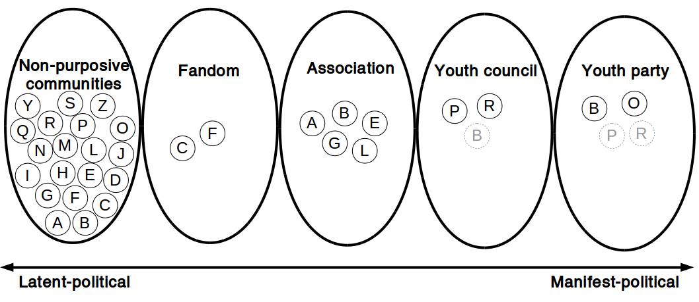

Between the latent-political and the manifest-political
Jakob Sejrup Villadsen
Pitfalls in the study of young people's political practices

How to explore political practices?
The photo elicitation interview
- A perspective from the youth
- An insight into the complexity of political practices
- Provide rich accounts of different types of political practices
A continuum of the political

Unfolding the political
Analytical themes

Expressing your identity

Using public space


Practising critique
[…] perhaps in the form of my silent protests. For example, after my school psychologist, where she called my parents bypassing me, I refused to use her anymore. Also, my psychiatrist - I was discharged because I don't think group therapy and medicine was a good idea. […] But I might consider, […] when I get it at a distance then just say: 'Hey, it wasn't really a very good experience I had here' or write a critique or write something.
The political in different youth communities
One way to see it
Another way to see it